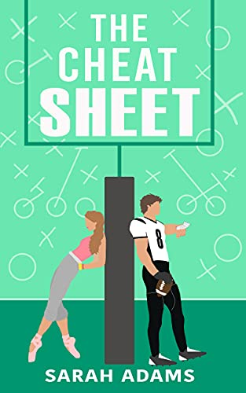
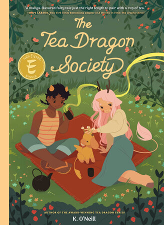

Discover your next favorite book.
Not sure what to read next? Explore different stories, genres, and recommendations to find something that interests you.
Whether you love romance, mystery, fantasy, or something completely different, your next great read is waiting.
Find a story that speaks to you.
Not sure where to begin? These approachable reads are a great starting point for discovering what kinds of stories you enjoy.
Fantasy

Legends & Lattes
An orc leaves her adventuring days behind to open a coffee shop. A cozy fantasy filled with friendship, fresh starts, and a little bit of magic.
Approximately 300 pages
Print, ebook, audiobook
Mystery

A Good Girl's Guide to Murder
A student investigates a closed murder case and discovers that the truth might be more complicated than everyone believes. Perfect for fans of true crime and suspense.
Approximately 400 pages
Print, ebook, audiobook
Romance

The Cheat Sheet
Two longtime best friends navigate their feelings for each other in this sweet and funny romance. A great choice for anyone who enjoys romantic comedies.
Approximately 320 pages
Print, ebook, audiobook
Nonfiction

The Psychology of Money
Explore how people think about money, make decisions, and develop financial habits. Short, approachable chapters make this a great introduction to nonfiction.
Approximately 250 pages
Print, ebook, audiobook
Science Fiction

All Systems Red
A sarcastic security robot finds itself caught in a dangerous mission. Short, humorous, and action-packed, this is an entertaining introduction to science fiction.
Approximately 150 pages
Print, ebook, audiobook
Graphic Novel

The Tea Dragon Society
A beautifully illustrated story about tiny dragons, friendship, and the art of making tea. A short and cozy read for anyone who enjoys visual storytelling.
Approximately 72 pages
Print, ebook